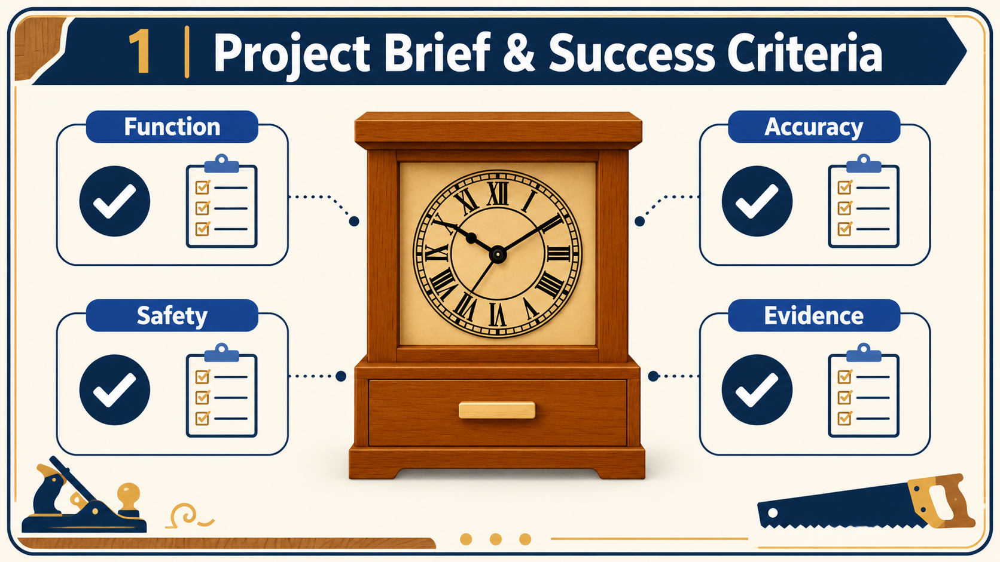

Module presentation
Learn with the slides
Use the presentation to preview Brief, plans and workshop safety, then work through the theory, checks and written evidence below.
Project plan and evidence
Use the plan and save evidence
Use the supplied Clock project plan alongside the module, then open the folio when your evidence is ready.
Your work
Student details
Your entries save automatically in this browser. Use Download evidence PDF before leaving the page.
Weeks 1-2
This module
Understand the Clock brief, read the supplied drawing and manage workshop risk before material is removed.
Theory 1
Understanding the Clock project brief and success criteria

A project brief explains what you are expected to design, make and document. For this project, you will produce a free-standing timber clock with a hidden drawer. The clock includes a carcass assembled with rebate joints, chamfered edges, a drilled opening in the face, a secret drawer made from suitable off-cuts, prepared surfaces, a three-coat oil finish and an accurately fitted battery clock mechanism.
The brief is not only about the finished object. It also explains the quality of work and evidence required during the project. You will be assessed on how safely and accurately you work, how well you plan each stage and how clearly you record your decisions and progress. A clock that looks complete but has poor joints, inaccurate fitting or missing portfolio evidence will not fully meet the brief.
Before beginning practical work, study the supplied drawing carefully. All dimensions are given in millimetres, and the instruction DO NOT SCALE DRAWING means you must use the written measurements rather than measuring distances directly from the printed image. Your planning evidence should include a Work Method Statement (WMS), a cutting list, suitable drawings or sketches and accurate material calculations.
During construction, the practical work, theory and portfolio should develop together. Theory helps you understand why accuracy, safety, joint quality, surface preparation and careful finishing matter. Practical work demonstrates that you can apply this knowledge under teacher supervision. Your portfolio provides evidence of the process through photographs, planning records, explanations and evaluations. Photographs should show important stages rather than only the completed clock.
Your sustainability notes should explain how materials were used responsibly, including the use of off-cuts for the secret drawer and ways waste was reduced. At the end of the project, a PMI evaluation should identify the positive features of your work, the aspects that could be improved and any interesting discoveries or design outcomes.
- Follow safe work practices and teacher directions throughout the project.
- Measure, mark, joint, sand and finish accurately.
- Produce complete planning documents, drawings and material calculations.
- Construct the rebate-jointed carcass, chamfered edges, drilled face opening and hidden drawer carefully.
- Fit the battery clock mechanism accurately and check the overall fit-up.
- Provide clear photographic, sustainability and PMI evaluation evidence.
Theory 2
Reading the Clock working drawing without scaling

The Clock working drawing is the main source of information for the project’s shape, size and arrangement. It presents the object through orthographic views and a pictorial view. Orthographic views show the Clock from different directions using flat, two-dimensional drawings. A pictorial view shows the overall form in a way that is easier to visualise. Each view has a different purpose, so they must be read together rather than treated as separate pictures.
The drawing uses third-angle projection. This means the position of each orthographic view follows a recognised layout. When reading the sheet, first identify which view shows the front, side or top information. Then compare matching features across the views. A feature that appears as a wide shape in one view may appear as a narrow edge or line in another. Cross-checking helps you understand what the drawing visibly communicates without guessing at unnamed parts or hidden relationships.
All dimensions on the drawing are in millimetres. Visible written dimensions include 235, 170, 145, 140, 130, 75, 65, 20, 15, 7.5 and 5 mm. These numbers must be read from the dimension lines, not estimated from the apparent size of the printed drawing. Dimension lines usually have arrowheads showing the exact distance being described. Extension lines project from the object to show where that measurement begins and ends. Trace both lines carefully before deciding which feature a number belongs to.
The sheet includes a scale note of 1:3, but it also clearly states DO NOT SCALE DRAWING. A scale of 1:3 means the printed image is smaller than the full-size project. It does not mean you should measure the paper and multiply the result. Printing, scanning or screen display can change the drawing’s physical size. The written dimensions remain the authoritative information.
- Locate the view that shows the feature most clearly.
- Find the written dimension beside that feature.
- Trace the dimension line between its arrowheads.
- Follow the extension lines back to the exact edges or points.
- Check the same feature in another related view.
- Confirm the unit is millimetres before recording or marking out.
- Stop and seek teacher clarification if the views or dimensions do not appear to agree.
Theory 3
Managing workshop hazards and risks for the Clock

Safe workshop practice begins with understanding the difference between a hazard, a risk and a control. A hazard is something with the potential to cause harm, such as moving machinery, timber dust, an unsecured component or a damaged power lead. Risk is the chance that the hazard will cause harm and how serious that harm could be. A control is an action or feature used to remove the hazard or reduce the risk.
The Clock project involves measuring, jointing, sanding, finishing and producing a drilled face opening. Hazards can change at each stage, so risk management is not a single check completed at the beginning. You must continue observing the work area, the component and the task. Stop and report anything that appears damaged, unstable, incorrectly positioned or different from the teacher’s demonstration.
The hierarchy of controls ranks methods of controlling risk from most effective to least effective. Apply it in this order:
- Eliminate: remove the hazard completely where possible, such as clearing unnecessary materials from the work area.
- Substitute: replace a hazardous material or process with a safer approved option when directed by the teacher.
- Engineering controls: use physical safety features such as guards, extraction systems or approved methods of securing work.
- Administrative controls: follow the relevant school standard operating procedure (SOP), teacher demonstrations, warning signs and approved work procedures.
- PPE: wear the correct personal protective equipment specified for the task. PPE reduces exposure but does not remove the hazard.
Secure work is especially important when a component could move, spin, lift or shift during an operation. Holding work by hand is not automatically safe. The approved method of support or restraint depends on the task, the equipment and the school SOP. Do not invent or copy a setup from another machine or online source. Follow the teacher’s direction and the approved SOP exactly.
Your assessment requires correct PPE and an accurate SOP for the drill press or the machine you use most. An SOP is not just paperwork. It identifies hazards, required controls, checks and safe operating expectations for that specific equipment. Teacher supervision matters because the teacher confirms that you understand the procedure, that the work is secure and that the planned operation is appropriate. Never begin a machine operation without the required approval and supervision.
Guided practice
Weeks 1-2 knowledge checks
Choose an answer, check it and use the progressive hints and feedback to improve.
Apply your learning
Scaffolded written responses
Write first, use the feedback prompts, then compare your reasoning with the appropriate response example.
Finish the two-week block
Save your evidence
Your work saves in this browser, but browser storage is not the official submission. Download the module evidence PDF before changing devices or clearing browser data.
No marks, answers or personal information are sent from this webpage.